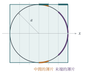

STEP I 2001，第 6 題
繼續之前，請先閱讀題目（原題為英文）。題目載於 STEP Support Programme 的題目資料庫： step.maths.org/questions/01-s1-q6
引子
把一個球形麵包切成厚度相等的薄片。靠近中間的幾片是又大又厚的圓片，只有邊緣一圈窄窄的麵包皮；靠近兩端的幾片則是小小的球冠，看起來幾乎全是麵包皮。兩端的薄片，麵包皮一定比較多吧？
其實不然。不論切在靠近中間還是靠近兩端的位置，每一片的麵包皮面積都完全相同。中間那圈窄帶周長很大，但幾乎是垂直的；兩端的球冠周長很小，但傾斜得很厲害，所以麵包皮鋪開的闊度反而較大。這兩種效應恰好互相抵消。這是阿基米德（Archimedes）的一條定理，他對這條定理珍愛有加，甚至要求在自己的墓碑上刻上一個內切於圓柱（cylinder）的球（sphere）。題目的第二部分是一則較為輕鬆的「規例」，但它所依據的正是同一個計算。
動筆之前
半徑為 \(a\) 的球，是由哪一條曲線繞 \(x\)-軸旋轉而成的？該曲線的 \(\frac{\mathrm{d}y}{\mathrm{d}x}\) 是甚麼？
把半圓（semicircle）\(y = \sqrt{a^2 - x^2}\), \(-a \leq x \leq a\) 旋轉，便得到這個球。於是 \(\frac{\mathrm{d}y}{\mathrm{d}x} = \frac{-x}{\sqrt{a^2 - x^2}} = -\frac xy\)。請記住這一點：斜率（slope）在兩端附近（\(x \to \pm a\)）很陡，在中間則很平緩，這正是引子中所描述的效應。
逐步解題
階段 1 麵包皮公式的化簡
對這個半圓計算 \(y\sqrt{1 + (y')^2}\)。奇妙的事情出現了。
由於 \(y' = -x/y\)， \[1 + (y')^2 = 1 + \frac{x^2}{y^2} = \frac{y^2 + x^2}{y^2} = \frac{a^2}{y^2},\] 所以 \(y\sqrt{1 + (y')^2} = y \cdot \frac{a}{y} = a\)，竟然是一個常數！因此，任意兩個平面 \(x = x_1\) 與 \(x = x_2\) 之間的麵包皮面積為 \[2\pi\int_{x_1}^{x_2} a\,\mathrm{d}x = 2\pi a(x_2 - x_1).\] 它只取決於兩個平面之間的距離，而與平面的位置無關。
階段 2 麵包皮與片數成正比
如果把麵包切成厚度為 \(h\) 的薄片，每一片的麵包皮面積都是 \(2\pi ah\)，片片相同。不論是從一端吃、從兩端吃，還是從任何地方吃掉若干片，剩下的麵包皮面積都是 \(2\pi ah\) 乘以剩下的片數。■
階段 3 「脆皮」的條件
題目的提示所描述的，是從一端吃掉若干片之後剩下的麵包，我們就依照提示去做：假設從 \(x = a\) 那一端開始吃，於是剩下的部分由 \(x = -a\) 延伸至 \(x = -a + t\)。一項關於「任意片數」的規定，應該不論麵包切得多薄都成立，所以我們把 \(t\) 看成可以取 \(0\) 與 \(2a\) 之間的任何值。（第 4 階段會探討從兩端吃的情況。）
利用題目給出的公式計算 \(V\)。使用代換（substitution）\(s = x + a\) 或許能令代數運算更簡潔。
設 \(s = x + a\)，則 \(y^2 = a^2 - x^2 = a^2 - (s - a)^2 = 2as - s^2\)，所以 \[V = \pi\int_0^t (2as - s^2)\,\mathrm{d}s = \pi\left(at^2 - \frac{t^3}{3}\right), \qquad A = 2\pi at,\] 以及 \[\frac{V}{A} = \frac{at^2 - t^3/3}{2at} = \frac t2 - \frac{t^2}{6a}.\]
規定要求吃掉任意片數之後都有 \(V/A < 1\)，即是對所有滿足 \(0 < t \leq 2a\) 的 \(t\) 都成立。在這個範圍內，\(\frac t2 - \frac{t^2}{6a}\) 的最大值是多少？
對 \(t\) 求導：\(\frac12 - \frac{t}{3a} = 0\) 於 \(t = \frac{3a}{2}\) 時成立，這個值位於範圍 \((0, 2a]\) 之內，而且是極大值（maximum）（該式是 \(t\) 的一條開口向下的拋物線）。最大值為 \[\frac{3a}{4} - \frac{9a^2/4}{6a} = \frac{3a}{4} - \frac{3a}{8} = \frac{3a}{8}.\] 脆皮麵包需要對所有 \(t\) 都有 \(V/A < 1\)，特別是在 \(t = \frac{3a}{2}\) 時也要成立，所以 \(\frac{3a}{8} < 1\)，即 \(a < \frac83 = 2\frac23\) 米。■
階段 4 題目之外：\(2\frac23\) 足夠嗎？
題目只要求找出半徑必須滿足的條件。\(a < \frac83\) 是否同時也足夠？如果從兩端吃又如何？
並不足夠。從兩端吃會在中間剩下一條環帶，而以同樣多的麵包皮計算，中間的環帶比末端的球冠包含更多麵包。對於環帶 \(-\frac w2 \leq x \leq \frac w2\)， \[V = \pi\int_{-w/2}^{w/2} (a^2 - x^2)\,\mathrm{d}x = \pi\Bigl(a^2w - \frac{w^3}{12}\Bigr), \qquad A = 2\pi aw, \qquad \frac VA = \frac a2 - \frac{w^2}{24a},\] 當環帶很窄時，這個值接近 \(\frac a2\)。例如，一個半徑為 \(2.4\) 米的麵包，明顯小於 \(2\frac23\)，切成四片後吃掉兩端的兩片，剩下的環帶有 \(w = a\) 及 \(\frac VA = \frac{11a}{24} = 1.1\)。事實上，對於任何一組薄片都有 \(\frac VA < \frac a2\)，所以如果可以從任何地方吃掉薄片，麵包是脆皮的當且僅當 \(a \leq 2\) 米。題目中的 \(2\frac23\) 是一個正確的必要條件（necessary condition），但這項規定其實比題目所透露的更為嚴格。
回顧
先化簡，後積分。麵包皮的被積函數（integrand）看似複雜，結果卻是常數。動手積分之前，務必先把被積函數化簡。
仔細閱讀「任意」二字。條件必須在吃掉任意片數之後都成立，所以我們需要的是 \(V/A\) 的最大值，而不是整個麵包的值（即 \(\frac a3\)）。
簡單的計算，出人意表的答案。「麵包皮相等」這個性質聽起來難以置信，但計算只有兩行。
背後的數學
阿基米德在《論球與圓柱》（On the Sphere and Cylinder）中證明了：球面上夾在兩個平行平面之間的環帶，其面積等於這兩個平面在包裹球的圓柱上所截出的環帶的面積（圖 4.8.1）。我們的計算正是這條帽盒定理（hat-box theorem）：半徑為 \(a\) 的圓柱每單位長度的麵包皮面積為 \(2\pi a\)，球也是如此。考慮整個球，它的表面積（surface area）等於圓柱的曲面面積，即 \(2\pi a \times 2a = 4\pi a^2\)。阿基米德認為，這個結果連同「球的體積是圓柱體積的三分之二」這一事實，是他畢生最出色的成就。西塞羅（Cicero）於公元前 75 年到訪敍拉古（Syracuse）時，正是憑着尋找刻在墓上的球與圓柱，找到了那座雜草叢生的墳墓。

地球的地圖
帽盒定理提供了一種繪製保持面積不變的地球地圖的方法。把地球儀上的每一點沿水平方向向外投影到包裹它的圓柱上，然後把圓柱攤開。球面上的環帶會映射到圓柱上面積相同的環帶，而任何區域也是如此。這就是蘭伯特（Lambert）圓柱等積投影（Lambert’s cylindrical equal-area projection，1772 年）。它在兩極附近會令形狀嚴重失真，但面積是如實的，不像人們熟悉的麥卡托（Mercator）投影那樣，令格陵蘭看起來與非洲一樣大（其實格陵蘭大約只有非洲的十四分之一）。高斯（Gauss）有一條著名的定理，稱為「絕妙定理」（Theorema Egregium，1827 年），它說明沒有任何球面地圖可以同時保持面積和形狀：每一幅平面的地球地圖都必定有所失真。
球面上的隨機點
以下是一個實際的應用。要在球面上均勻（uniformly）隨機地選取一點，你或許會嘗試均勻地選取緯度（latitude）和經度（longitude），但這樣會令點在兩極附近過於密集。帽盒定理給出了正確的做法：在 \(-a\) 與 \(a\) 之間均勻地選取高度 \(x\)，並在 \(0\) 與 \(2\pi\) 之間均勻地選取經度。由於面積與高度成正比，這樣選出的點恰好是均勻分佈的。物理學和電腦圖像的電腦模擬都採用這個方法。（值得一提的是，這個方法只在三維空間中有效：對於四維或更高維的球面，相應的命題並不成立。）
思維技巧
當計算得出出乎意料地簡單的結果（例如一個常數）時，請停下來問一問為甚麼。背後通常有幾何上的原因，而找出這個原因，才是真正理解之所在。
在這裏，被積函數 \(y\sqrt{1 + (y')^2}\) 是常數，因為在球面上，陡峭程度與離軸的距離恰好互相補償：這就是阿基米德的定理。
延伸練習
整個麵包。證明對於整個未切開的麵包，\(V/A = \frac a3\)。為甚麼題目中的條件比 \(\frac a3 < 1\) 更難滿足？
熱帶地區。地球表面有多大比例位於南緯 \(23.4^\circ\) 與北緯 \(23.4^\circ\) 之間？（把地球視為一個球。由於面積與高度成正比，你只需要用到 \(\sin 23.4^\circ\)。）
其他形狀。證明對於拋物面（paraboloid）形狀的麵包（把 \(y = \sqrt x\) 繞 \(x\)-軸旋轉），每片的麵包皮並非常數。對於哪些曲線 \(y(x)\)，\(y\sqrt{1 + (y')^2}\) 是常數？（解出相應的微分方程（differential equation）。）
體積。利用體積公式，證明球的體積是包裹它的圓柱體積的三分之二，正如阿基米德所發現的那樣。
延伸閱讀
Sherman Stein, Archimedes: What Did He Do Besides Cry Eureka?（Mathematical Association of America）。為現代讀者講解阿基米德的數學。
Timothy Gowers, Mathematics: A Very Short Introduction（Oxford University Press）。書中關於幾何的一章介紹了曲面的幾何。
John Snyder, Flattening the Earth（University of Chicago Press）。兩千年來的地圖投影史。